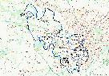

Name:
John DUNN
Sex:
Male
Father:
-
Mother:
-

1776, 1776 Ecclesiastical Map of Norwich South
England and Wales Birth Registration Index, John Dunn, 9 December 1708, St Martin's of Coslany, Norwich, Norfolk, England, FHL Film 1526718, Ancestry.co.uk.
Parish Register for Birth of John Dunn.
England and Wales Baptism Registration Index, Findmypast.co.uk.
England and Wales Baptism Registration Index, Norfolk Registry Office.